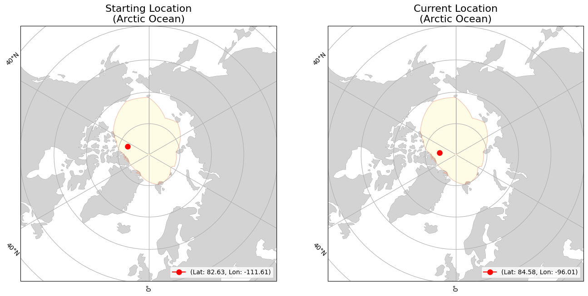

<div><div><b>Buoy Starting and Current Locations</b></div></div>
<div><div><b>Buoy Movement over Time</b></div></div>
<iframe src="300534063484300_movement.html" width="1000" height="1000" style="border:none;"></iframe>
<div>                        <script type="text/javascript">window.PlotlyConfig = {MathJaxConfig: 'local'};</script>
        <script charset="utf-8" src="https://cdn.plot.ly/plotly-2.35.2.min.js"></script>                <div id="217c434e-85fc-4b64-8f3a-8cc9fd12833a" class="plotly-graph-div" style="height:600px; width:1000px;"></div>            <script type="text/javascript">                                    window.PLOTLYENV=window.PLOTLYENV || {};                                    if (document.getElementById("217c434e-85fc-4b64-8f3a-8cc9fd12833a")) {                    Plotly.newPlot(                        "217c434e-85fc-4b64-8f3a-8cc9fd12833a",                        [{"hovertemplate":"Date=%{x}\u003cbr\u003etotal_distance_km=%{y}\u003cextra\u003e\u003c\u002fextra\u003e","legendgroup":"","line":{"color":"#636efa","dash":"solid"},"marker":{"symbol":"circle"},"mode":"lines","name":"","orientation":"v","showlegend":false,"x":["2024-07-17","2024-07-18","2024-07-19","2024-07-20","2024-07-21","2024-07-22","2024-07-23","2024-07-24","2024-07-25","2024-07-26","2024-07-27","2024-07-28","2024-07-29","2024-07-30","2024-07-31","2024-08-01","2024-08-02","2024-08-03","2024-08-04","2024-08-05","2024-08-06","2024-08-07","2024-08-08","2024-08-09","2024-08-10","2024-08-11","2024-08-12","2024-08-13","2024-08-14","2024-08-15","2024-08-16","2024-08-17","2024-08-18","2024-08-19","2024-08-20","2024-08-21","2024-08-22","2024-08-23","2024-08-24","2024-08-25","2024-08-26","2024-08-27","2024-08-28","2024-08-29","2024-08-30","2024-08-31","2024-09-01","2024-09-02","2024-09-03","2024-09-04","2024-09-05","2024-09-06","2024-09-07","2024-09-08","2024-09-09","2024-09-10","2024-09-11","2024-09-12","2024-09-13","2024-09-14","2024-09-15","2024-09-16","2024-09-17","2024-09-18","2024-09-19","2024-09-20","2024-09-21","2024-09-22","2024-09-23","2024-09-24","2024-09-25","2024-09-26","2024-09-27","2024-09-28","2024-09-29","2024-09-30","2024-10-01","2024-10-02","2024-10-03","2024-10-04","2024-10-05","2024-10-06","2024-10-07","2024-10-08","2024-10-09","2024-10-10","2024-10-11","2024-10-12","2024-10-13","2024-10-14","2024-10-15","2024-10-16","2024-10-17","2024-10-18","2024-10-19","2024-10-20","2024-10-21","2024-10-22","2024-10-23","2024-10-24","2024-10-25","2024-10-26","2024-10-27","2024-10-28","2024-10-29","2024-10-30","2024-10-31","2024-11-01","2024-11-02","2024-11-03","2024-11-04","2024-11-05","2024-11-06","2024-11-07","2024-11-08","2024-11-09","2024-11-10","2024-11-11","2024-11-12","2024-11-13","2024-11-14","2024-11-15","2024-11-16","2024-11-17","2024-11-18","2024-11-19","2024-11-20","2024-11-21","2024-11-22","2024-11-23","2024-11-24","2024-11-25","2024-11-26","2024-11-27","2024-11-28","2024-11-29","2024-11-30","2024-12-01","2024-12-02","2024-12-03","2024-12-04","2024-12-05","2024-12-06","2024-12-07","2024-12-08","2024-12-09","2024-12-10","2024-12-11","2024-12-12","2024-12-13","2024-12-14","2024-12-15","2024-12-16","2024-12-17","2024-12-18","2024-12-19","2024-12-20","2024-12-21","2024-12-22","2024-12-23","2024-12-24","2024-12-25","2024-12-26"],"xaxis":"x","y":[5.259281140095164,9.778153803544592,9.538691970423615,9.189551751886045,8.810924845112915,6.280344520729667,0.9382660989825512,7.995078176536757,7.846017229962845,3.2647315694588372,6.504129556632891,7.661064032393549,3.740334427029639,1.9576566649616205,1.737667994881403,7.255939945331479,2.321454484990075,6.851278064851267,11.821847043027288,12.738376386896393,5.88380875608121,4.038908404008543,4.049950730840584,3.3795989371320148,4.948272006575051,16.493053472839943,10.68587618562255,2.9882388463653826,5.8703655277370625,6.555271499513428,6.234386594379085,9.932295329827229,13.911269598634354,9.210293885627612,10.00849107696805,8.981580482769157,19.96710428234097,17.695916997266025,14.936784672877037,11.439182558170408,5.12940197152229,2.4704353835190984,4.968826070478791,10.583290513604389,14.65333689395269,7.924522422967815,9.305704076331883,11.374652944629059,19.59678902187832,15.157446104855953,13.260837908221058,13.534645052245713,5.879535995106143,10.769220895049385,2.596232867072803,2.4219011733383473,1.3928256390325056,3.158341845763359,6.548038772596966,7.401778571825638,2.740832109551708,2.1320070427051165,1.2367014753425842,1.897041917686818,5.289778219818347,3.6801480741484425,1.444140926349719,3.74484391677189,6.572932855900639,0.6751638295171327,1.564657956083825,7.174337135921023,10.662984501289746,10.66421419926739,11.2783268881506,4.687068084704211,0.8976404880437527,4.490280411222135,7.143093794027859,2.9812250981734296,2.64749058490437,10.764213816699458,5.5647894669384,7.792987625491072,4.551947054878321,1.2186033327202976,7.788348639685726,12.240629576555238,9.034824712215947,8.46654867314118,11.038935914377763,5.939384808284337,10.538682324800398,6.773211322185589,2.906002767746135,5.121040575369235,9.24404430763634,12.355661402096679,10.36729324099071,4.121361682667784,5.534116175702162,9.121486397244114,15.240403295610065,10.256775560818761,5.497623377999578,14.392954182381597,12.748976603364227,9.18392999434145,8.06984757660349,12.839895963455858,12.311548049834192,13.25470116329434,10.307991865463308,12.48687188959354,9.131085011661341,7.960629901351081,14.486501210058753,5.952721689539089,11.760477935798123,2.6828187389832805,0.5141066741595389,1.9267784665281142,4.991315153642117,12.440565026808754,14.430023943519219,13.30681770951589,13.453272702763627,25.47408299106224,11.255522582769117,7.369947749960441,3.813333245489264,4.308780329803775,5.186630628432488,13.273618685198876,11.068018900396712,8.449330975474105,11.568235978873592,10.709789930023668,1.2717341185833089,4.6897887558620015,3.2189710029166343,1.4855747074824315,3.2185553348440146,0.14607138356376448,0.5469150268965779,0.023156442580441073,0.04472019079276821,0.028888749932818515,0.06471013832424576,3.9690358542498116,13.143588712891157,14.634522898858489,4.0943542852806765,0.2308516026459306,0.6820937249888386,0.06714711715962085,0.04458037136503175,0.5917892231751615,2.6168405971307807,1.546231734561154,2.2436626677239953,1.8698163861394081,1.0740301985345455],"yaxis":"y","type":"scatter"}],                        {"template":{"data":{"histogram2dcontour":[{"type":"histogram2dcontour","colorbar":{"outlinewidth":0,"ticks":""},"colorscale":[[0.0,"#0d0887"],[0.1111111111111111,"#46039f"],[0.2222222222222222,"#7201a8"],[0.3333333333333333,"#9c179e"],[0.4444444444444444,"#bd3786"],[0.5555555555555556,"#d8576b"],[0.6666666666666666,"#ed7953"],[0.7777777777777778,"#fb9f3a"],[0.8888888888888888,"#fdca26"],[1.0,"#f0f921"]]}],"choropleth":[{"type":"choropleth","colorbar":{"outlinewidth":0,"ticks":""}}],"histogram2d":[{"type":"histogram2d","colorbar":{"outlinewidth":0,"ticks":""},"colorscale":[[0.0,"#0d0887"],[0.1111111111111111,"#46039f"],[0.2222222222222222,"#7201a8"],[0.3333333333333333,"#9c179e"],[0.4444444444444444,"#bd3786"],[0.5555555555555556,"#d8576b"],[0.6666666666666666,"#ed7953"],[0.7777777777777778,"#fb9f3a"],[0.8888888888888888,"#fdca26"],[1.0,"#f0f921"]]}],"heatmap":[{"type":"heatmap","colorbar":{"outlinewidth":0,"ticks":""},"colorscale":[[0.0,"#0d0887"],[0.1111111111111111,"#46039f"],[0.2222222222222222,"#7201a8"],[0.3333333333333333,"#9c179e"],[0.4444444444444444,"#bd3786"],[0.5555555555555556,"#d8576b"],[0.6666666666666666,"#ed7953"],[0.7777777777777778,"#fb9f3a"],[0.8888888888888888,"#fdca26"],[1.0,"#f0f921"]]}],"heatmapgl":[{"type":"heatmapgl","colorbar":{"outlinewidth":0,"ticks":""},"colorscale":[[0.0,"#0d0887"],[0.1111111111111111,"#46039f"],[0.2222222222222222,"#7201a8"],[0.3333333333333333,"#9c179e"],[0.4444444444444444,"#bd3786"],[0.5555555555555556,"#d8576b"],[0.6666666666666666,"#ed7953"],[0.7777777777777778,"#fb9f3a"],[0.8888888888888888,"#fdca26"],[1.0,"#f0f921"]]}],"contourcarpet":[{"type":"contourcarpet","colorbar":{"outlinewidth":0,"ticks":""}}],"contour":[{"type":"contour","colorbar":{"outlinewidth":0,"ticks":""},"colorscale":[[0.0,"#0d0887"],[0.1111111111111111,"#46039f"],[0.2222222222222222,"#7201a8"],[0.3333333333333333,"#9c179e"],[0.4444444444444444,"#bd3786"],[0.5555555555555556,"#d8576b"],[0.6666666666666666,"#ed7953"],[0.7777777777777778,"#fb9f3a"],[0.8888888888888888,"#fdca26"],[1.0,"#f0f921"]]}],"surface":[{"type":"surface","colorbar":{"outlinewidth":0,"ticks":""},"colorscale":[[0.0,"#0d0887"],[0.1111111111111111,"#46039f"],[0.2222222222222222,"#7201a8"],[0.3333333333333333,"#9c179e"],[0.4444444444444444,"#bd3786"],[0.5555555555555556,"#d8576b"],[0.6666666666666666,"#ed7953"],[0.7777777777777778,"#fb9f3a"],[0.8888888888888888,"#fdca26"],[1.0,"#f0f921"]]}],"mesh3d":[{"type":"mesh3d","colorbar":{"outlinewidth":0,"ticks":""}}],"scatter":[{"fillpattern":{"fillmode":"overlay","size":10,"solidity":0.2},"type":"scatter"}],"parcoords":[{"type":"parcoords","line":{"colorbar":{"outlinewidth":0,"ticks":""}}}],"scatterpolargl":[{"type":"scatterpolargl","marker":{"colorbar":{"outlinewidth":0,"ticks":""}}}],"bar":[{"error_x":{"color":"#2a3f5f"},"error_y":{"color":"#2a3f5f"},"marker":{"line":{"color":"#E5ECF6","width":0.5},"pattern":{"fillmode":"overlay","size":10,"solidity":0.2}},"type":"bar"}],"scattergeo":[{"type":"scattergeo","marker":{"colorbar":{"outlinewidth":0,"ticks":""}}}],"scatterpolar":[{"type":"scatterpolar","marker":{"colorbar":{"outlinewidth":0,"ticks":""}}}],"histogram":[{"marker":{"pattern":{"fillmode":"overlay","size":10,"solidity":0.2}},"type":"histogram"}],"scattergl":[{"type":"scattergl","marker":{"colorbar":{"outlinewidth":0,"ticks":""}}}],"scatter3d":[{"type":"scatter3d","line":{"colorbar":{"outlinewidth":0,"ticks":""}},"marker":{"colorbar":{"outlinewidth":0,"ticks":""}}}],"scattermapbox":[{"type":"scattermapbox","marker":{"colorbar":{"outlinewidth":0,"ticks":""}}}],"scatterternary":[{"type":"scatterternary","marker":{"colorbar":{"outlinewidth":0,"ticks":""}}}],"scattercarpet":[{"type":"scattercarpet","marker":{"colorbar":{"outlinewidth":0,"ticks":""}}}],"carpet":[{"aaxis":{"endlinecolor":"#2a3f5f","gridcolor":"white","linecolor":"white","minorgridcolor":"white","startlinecolor":"#2a3f5f"},"baxis":{"endlinecolor":"#2a3f5f","gridcolor":"white","linecolor":"white","minorgridcolor":"white","startlinecolor":"#2a3f5f"},"type":"carpet"}],"table":[{"cells":{"fill":{"color":"#EBF0F8"},"line":{"color":"white"}},"header":{"fill":{"color":"#C8D4E3"},"line":{"color":"white"}},"type":"table"}],"barpolar":[{"marker":{"line":{"color":"#E5ECF6","width":0.5},"pattern":{"fillmode":"overlay","size":10,"solidity":0.2}},"type":"barpolar"}],"pie":[{"automargin":true,"type":"pie"}]},"layout":{"autotypenumbers":"strict","colorway":["#636efa","#EF553B","#00cc96","#ab63fa","#FFA15A","#19d3f3","#FF6692","#B6E880","#FF97FF","#FECB52"],"font":{"color":"#2a3f5f"},"hovermode":"closest","hoverlabel":{"align":"left"},"paper_bgcolor":"white","plot_bgcolor":"#E5ECF6","polar":{"bgcolor":"#E5ECF6","angularaxis":{"gridcolor":"white","linecolor":"white","ticks":""},"radialaxis":{"gridcolor":"white","linecolor":"white","ticks":""}},"ternary":{"bgcolor":"#E5ECF6","aaxis":{"gridcolor":"white","linecolor":"white","ticks":""},"baxis":{"gridcolor":"white","linecolor":"white","ticks":""},"caxis":{"gridcolor":"white","linecolor":"white","ticks":""}},"coloraxis":{"colorbar":{"outlinewidth":0,"ticks":""}},"colorscale":{"sequential":[[0.0,"#0d0887"],[0.1111111111111111,"#46039f"],[0.2222222222222222,"#7201a8"],[0.3333333333333333,"#9c179e"],[0.4444444444444444,"#bd3786"],[0.5555555555555556,"#d8576b"],[0.6666666666666666,"#ed7953"],[0.7777777777777778,"#fb9f3a"],[0.8888888888888888,"#fdca26"],[1.0,"#f0f921"]],"sequentialminus":[[0.0,"#0d0887"],[0.1111111111111111,"#46039f"],[0.2222222222222222,"#7201a8"],[0.3333333333333333,"#9c179e"],[0.4444444444444444,"#bd3786"],[0.5555555555555556,"#d8576b"],[0.6666666666666666,"#ed7953"],[0.7777777777777778,"#fb9f3a"],[0.8888888888888888,"#fdca26"],[1.0,"#f0f921"]],"diverging":[[0,"#8e0152"],[0.1,"#c51b7d"],[0.2,"#de77ae"],[0.3,"#f1b6da"],[0.4,"#fde0ef"],[0.5,"#f7f7f7"],[0.6,"#e6f5d0"],[0.7,"#b8e186"],[0.8,"#7fbc41"],[0.9,"#4d9221"],[1,"#276419"]]},"xaxis":{"gridcolor":"white","linecolor":"white","ticks":"","title":{"standoff":15},"zerolinecolor":"white","automargin":true,"zerolinewidth":2},"yaxis":{"gridcolor":"white","linecolor":"white","ticks":"","title":{"standoff":15},"zerolinecolor":"white","automargin":true,"zerolinewidth":2},"scene":{"xaxis":{"backgroundcolor":"#E5ECF6","gridcolor":"white","linecolor":"white","showbackground":true,"ticks":"","zerolinecolor":"white","gridwidth":2},"yaxis":{"backgroundcolor":"#E5ECF6","gridcolor":"white","linecolor":"white","showbackground":true,"ticks":"","zerolinecolor":"white","gridwidth":2},"zaxis":{"backgroundcolor":"#E5ECF6","gridcolor":"white","linecolor":"white","showbackground":true,"ticks":"","zerolinecolor":"white","gridwidth":2}},"shapedefaults":{"line":{"color":"#2a3f5f"}},"annotationdefaults":{"arrowcolor":"#2a3f5f","arrowhead":0,"arrowwidth":1},"geo":{"bgcolor":"white","landcolor":"#E5ECF6","subunitcolor":"white","showland":true,"showlakes":true,"lakecolor":"white"},"title":{"x":0.05},"mapbox":{"style":"light"}}},"xaxis":{"anchor":"y","domain":[0.0,1.0],"title":{"text":"Date"},"tickangle":45},"yaxis":{"anchor":"x","domain":[0.0,1.0],"title":{"text":"total_distance_km"}},"legend":{"tracegroupgap":0},"margin":{"t":60},"title":{"text":"Total Distance Traveled over Time","font":{"size":16},"x":0.5},"height":600,"width":1000},                        {"responsive": true}                    )                };                            </script>        </div>